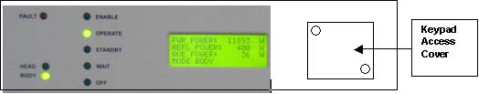

Operating Documentation
Direction 5133330-3, Rev# 14
Signa EXCITE HD 3.0T Service Methods
Module Version 1.0, Version Date 5/3/07
Operating Documentation |
2. Go to the amplifier and remove the Keypad cover, located on the front of the amplifier near the display.
Illustration 1: Front Of RF Amp Control Module

There are 2 adjustments available to calibrate the RF amplifier:
Atten Setup: When selected with the keypad and Menu button:
Selecting the Down arrow will DECREASE Attenuation. (Wattmeter will display an INCREASE in power level).
Selecting the Up arrow will INCREASE attenuation. (Wattmeter will display a DECREASE in power level).
Attenuation can be adjusted in coarse steps (1-10, 10, 20 30, 40 50, 60, 70, 80 90, 100) as defined by the current Atten Step value.
Atten Step adjustment: When selected with the keypad and Menu buttons selecting the Down arrow up arrows will adjust the “Step size” of the change that will occur during Atten Setup.
Typically, the “Atten Step” value is between 16 -18 in Head mode or between 12 -14 in Body mode. These two coarse adjustments allow the user to adjust the amp gain to as close to specification as possible by providing very good control of the feedback stage of the Solid State amplifier.
VVA setup: When selected with the keypad and Menu button:
Selecting the Down arrow will DECREASE the Gain of the amplifier. (Wattmeter will display a DECREASE in power level).
Selecting the Up arrow will INCREASE the gain of the amplifier. (Wattmeter will display an INCREASE in power level).
Gain can be adjusted in fine steps (1-10) as defined by the current VVA Step value.
b. VVA Step: When selected with the keypad and Menu buttons, selecting the Down or up arrows will adjust the “Step size” of the change that will occur during Atten Setup
The “VVA Step” typical value has not yet been defined for both Body Mode, and Head mode. These two Fine adjustments allow the user to adjust the amp gain to even closer to specification by providing an additional amount of fine control of the feedback stage of the Solid State amplifier.
These two settings and iterating on their “Step” values will be used to perform a precise Attenuation and Gain adjustment of Solid State amplifier and ultimately both PA (Body) and (IPA) Head stages.
Local: Allows for Local or External amplifier keypad control. This button has no significance in the Field or for Service. It is only used at the factory. When the green LED is OFF, the amplifier control is in local mode. NORMAL operation: Green LED is ON, indicating that there is external (Computer) control.
Down Arrow and Up arrow: These two buttons are used to increase or decrease the gain/Attenuation of the amplifier, and also are used to increase or decrease the “Step size” of the “Atten Setup” and “VVA Setup” Function.
Enter Button: Used to lock in the value of “Atten Setup” or VVA setup”. It is pushed at the end of each setup mode.
Operate: Same as Stby. Returns amplifier to normal operation. Upon completion of “Atten Setup” and/or “VVA Setup”, this button is pushed. Wait at least 30 seconds to download the setup values to the solid state ROM.
Stby: Same as Operate. Returns amplifier to normal operation. Upon completion of “Atten Setup” and/or “VVA Setup”, this button is pushed. Wait at least 30 seconds to download the setup values to the solid state ROM.
Mode: Allows for a change in mode within each setting.